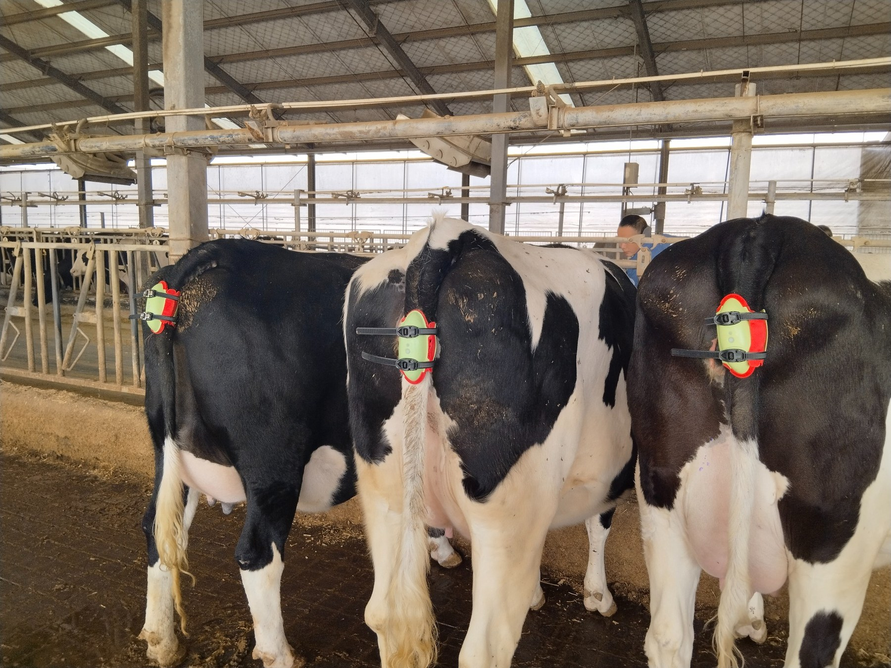
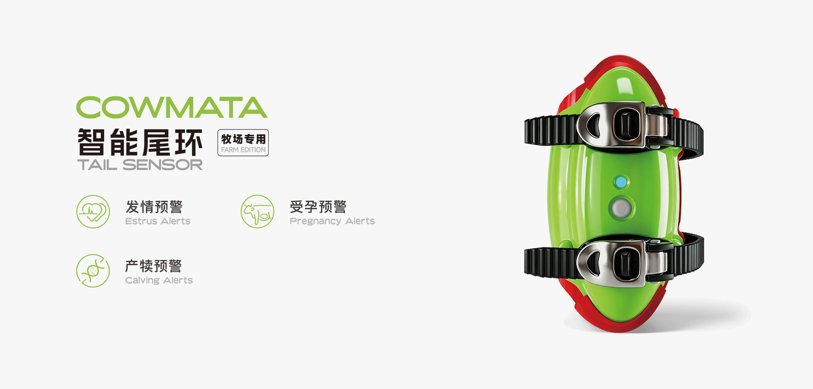
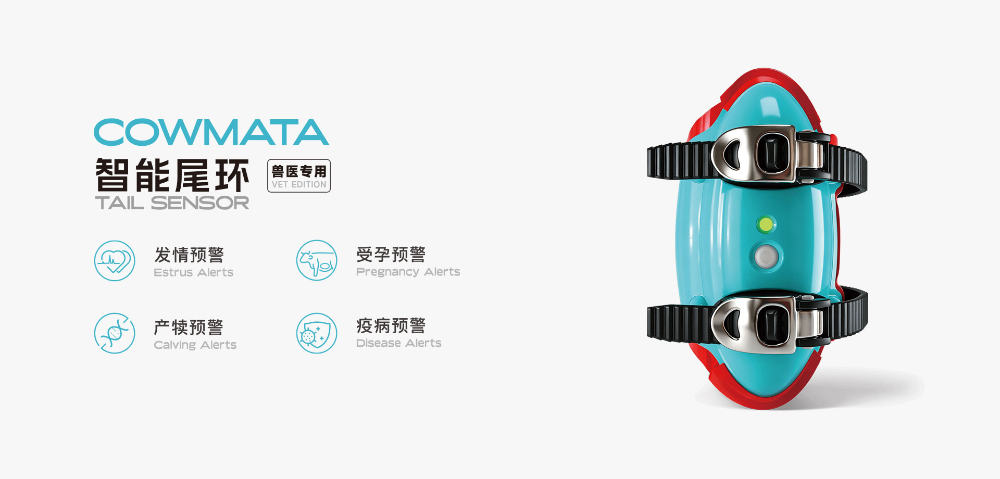
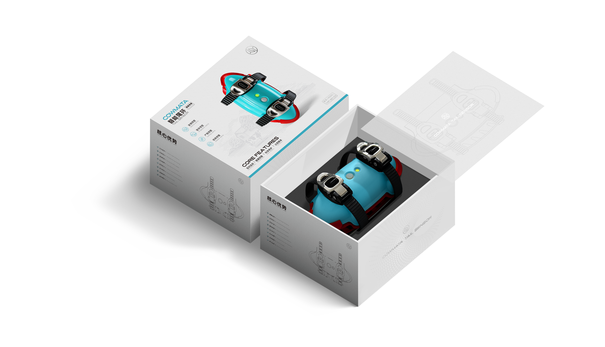
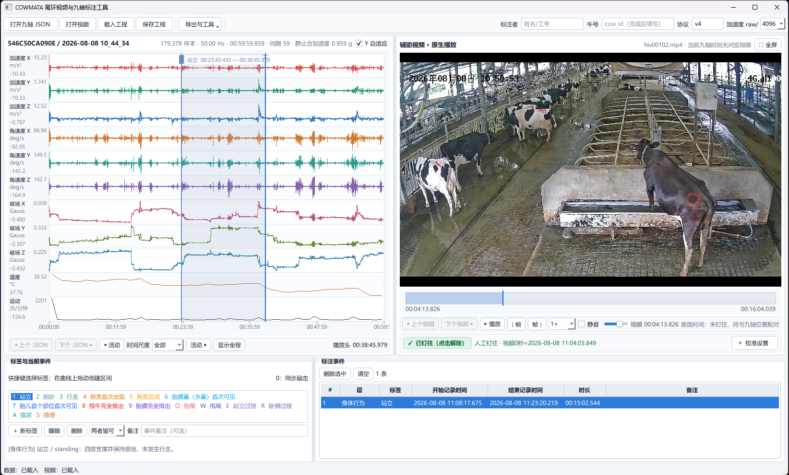
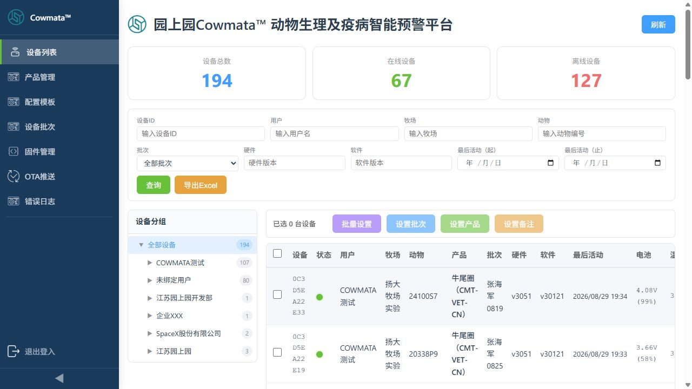
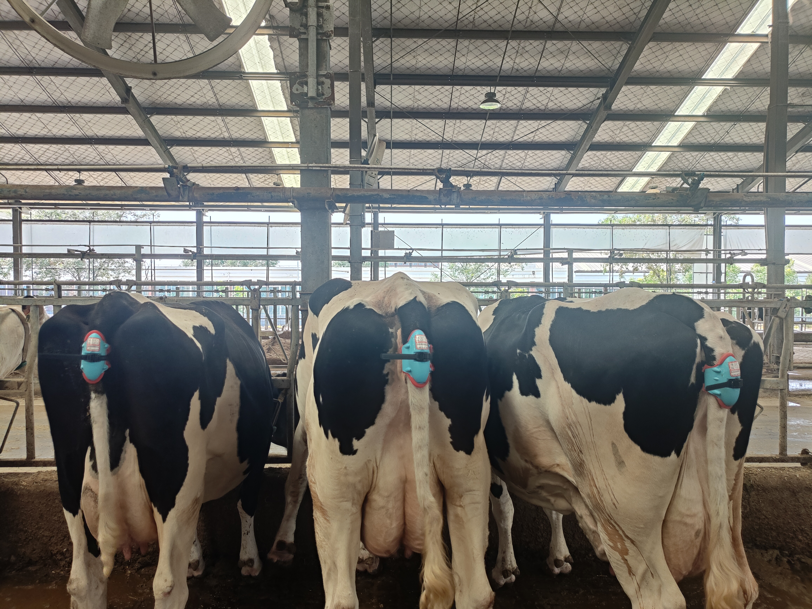

真实佩戴场景 · 来源：项目演示文稿，2026-08-26
01 / 感知，从尾环开始
九轴 IMU 记录运动，温度与 PPG 补充生理观测；结合时间同步与数据质量检查，建立连续观测基础。



02 / 从现场记录，到可复核证据
佩戴采集 → 视频复核 → 行为时间线 → 风险证据 → 人工处置


03 / 产犊现场：为什么需要连续观察
现场片段展示产犊观察场景。算法需要以真实事件时刻和连续记录为依据开展验证；视频本身不展示模型预警结果。
PPT 第 2 页内嵌原始视频 · 点击播放，无自动播放。

04 / 我们正在推进什么
已有行为识别基线、视频标注工具、温度和活动量证据模块。当前重点是产犊实验与连续预警验证；发情、妊娠和健康风险是进一步研究方向。
团队、进展与代码入口